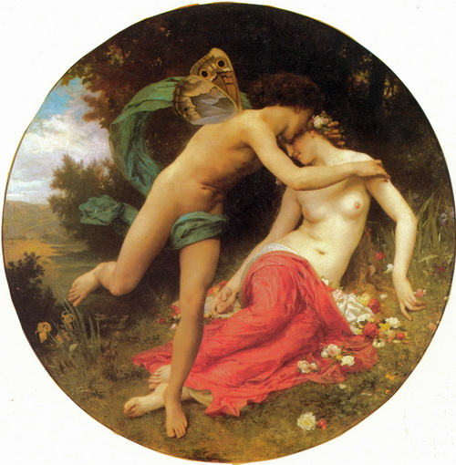
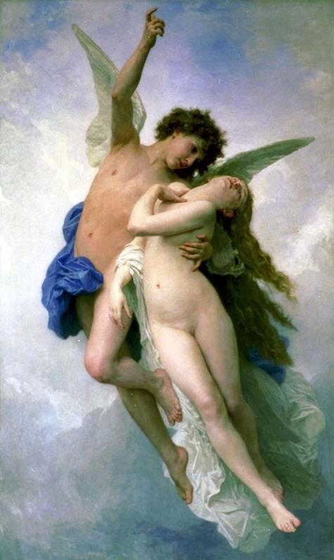

Truyện thần thoại La Mã về Cupidon như sau:
Xưa có một vị vua sinh được ba người con gái xinh đẹp, nhưng người con gái út, nàng Psyché xinh đẹp hơn cả. Psyché đẹp đến nỗi đứng bên các chị, người ta có thể tưởng đó là một vị nữ thần đứng cạnh người trần. Tiếng tăm về sắc đẹp của nàng Psyché lan truyền đi khắp bốn phương khiến các chàng trai gần xa nô nức kéo đến chiêm ngưỡng nàng. Trăm người như một, ai đã có dịp thấy nàng đều cho rằng có lẽ nàng là một vị thần giáng thế. Và người ta tôn sùng nàng như một vị nữ thần, thậm chí đến nỗi cho rằng nàng còn đẹp hơn cả nữ thần Tình yêu và Sắc đẹp-Vénus. Cứ thế ngày mỗi ngày người đến để “trộm liếc” dung nhan của Psyché càng đông, sự tôn sùng, ngợi ca sắc đẹp nàng càng tăng khiến cho việc thờ phụng nữ thần Vénus bị sao nhãng. Đền thờ Vénus tro lạnh, hương tàn, người đến cúng lễ thưa thớt. Những đô thị thờ phụng nữ thần Vénus xưa sầm uất đông vui là thế, thu hút khách thập phương, thiện nam tín nữ là thế mà nay buồn tẻ vắng ngắt. Sự thể đó làm nữ thần Vénus ăn không ngon, ngủ không yên. “Phải mau mau xóa bỏ cái cảnh này chứ cứ để mãi như thế này thì thật là một tai họa...” Nữ thần Vénus nghĩ thế và nàng cho gọi đứa con trai yêu quý đến. Chàng trai Cupidon hoặc Amour, tên tuy hai nhưng người chỉ là một, với cây cung và ống tên luôn ở bên người, đã đến ngay không hề chậm trễ. Nữ thần Vénus sau khi kể cho con biết sự thể đầu đuôi, bèn ra lệnh:
- Con hãy trổ tài của mình đi. Làm sao cho cái con bé ấy nó yêu say yêu đắm, yêu đến chết mê chết mệt một chàng trai xấu xí nhất trần đời, xấu đến nỗi ma chê quỷ trách, người khinh... hiểu chưa? Con hãy giúp mẹ, trổ tài của mình đi!
Cupidon vâng lệnh bay xuống trần. Chàng tìm đến nơi Psyché ở. Nghiệt ngã thay, chàng không sao tìm thấy một anh chàng nào xấu xí đến nỗi ma chê, quỷ trách, người khinh, xấu đến nỗi phải bắn cho nó một phát tên để nó được yêu một người đẹp như Psyché... theo đúng lời dặn. Cũng có thể Cupidon không nỡ bắt một người con gái đẹp như thế phải lấy một người chồng mà những người con gái chẳng xinh cũng chẳng đẹp còn chê. Nhưng có lẽ đúng hơn cả là chàng Cupidon trẻ đẹp này đã... ngay từ khi mới sơ kiến dung nhan nàng Psyché, đem lòng yêu nàng, yêu lắm ấy, yêu đến nỗi như chàng đã bị trúng một phát tên của mình. Tình cảnh nó lại éo le đến như thế cho nên Cupidon chỉ có cách về nhà nói dối mẹ là chưa tìm được một người nào xấu trai đến nỗi... xứng đáng được hưởng phát tên của mình.
Còn Psyché, nàng vẫn là niềm ước mơ bồn chồn cháy bỏng của bao nhiêu chàng trai. Biết bao trang công tử phong lưu mã thượng, tiền kho thóc đụn, gia nhân kể có hàng trăm, đến cầu hôn với nàng. Cũng không ít những tráng sĩ anh hùng, tài năng kiệt xuất, võ nghệ cao cường nhưng khinh tài trọng nghĩa đến xin đón nàng về làm vợ. Nhưng tất cả đều thất vọng. Nàng xem ra chẳng thiết nghĩ đến chuyện tình yêu và gia đình. Nàng chẳng đặt ra một điều kiện gì, nêu lên một đòi hỏi gì đối với bất cứ ai và cũng chẳng tỏ ra để ý đến một chàng trai nào. Trong khi đó hai người chị của nàng đã yên bề gia thất. Tuy họ chẳng đẹp bằng Psyché nhưng mỗi nàng cũng đã chọn cho mình được một vị hoàng tử xứng đáng. Chỉ còn mình Psyché xinh đẹp được tôn sùng, chiêm ngưỡng, ngợi ca trọng vọng song lại sống trong cảnh cô đơn. Nàng chẳng yêu ai cũng không ai yêu được nàng. Bởi vì Cupidon đã giữ những mũi tên của mình lại.
Tình hình đó làm cho cha mẹ Psyché, vua cha và hoàng hậu rất đỗi lo lắng. Chỉ còn cách đến đền thờ thần Apollon xin thần ban cho một lời chỉ dẫn. Lời chỉ dẫn thật khá ác nghiệt. Thần Cupidon đã đến gặp thần Apollon, kể hết nỗi lòng của mình và tha thiết xin thần Apollon giúp đỡ. Đó là một sự “móc ngoặc”, nguồn gốc của lời phán truyền sau đây: Psyché sẽ có một người chồng! Chồng nàng sẽ đón nàng đi vào một đêm khuya. Hãy mặc cho nàng đồ tang, đưa nàng lên đỉnh ngọn đồi cao và để nàng ở lại đó một mình. Một con mãng xà có cánh, còn mạnh hơn các vị thần sẽ đến đưa nàng về làm vợ. Nếu không làm đúng như vậy thì chưa biết những tai họa gì sẽ giáng xuống đầu thần dân xứ này.
Đức vua trở về thuật lại lời phán truyền của thần Apollon cho mọi người biết. Hoàng hậu nghe xong, thét lên một tiếng kinh hoàng rồi ngất đi. Cả kinh thành vang lên tiếng khóc than thảm thiết. Người ta sắm sửa lễ tiễn đưa Psyché. Còn nàng, trong nỗi đau thương của mọi người cũng không cẩm được nước mắt. Tuy nhiên nàng cố gắng trấn tĩnh để an ủi vua cha và hoàng hậu:
- Xin cha mẹ bớt đau buồn! Con có lấy phải một người chồng không xứng đáng cũng là để cứu đô thành ta thoát khỏi tai họa. Chắc rằng con sẽ có ngày về thăm lại cha mẹ và bà con họ hàng thân thích.
Nàng thầm oán trách cho số phận trớ trêu của mình. Sắc đẹp của nàng đã gây ra sự ghen tức của thần linh. Lễ tiễn đưa nàng, một cô dâu về nhà chồng mà cử hành như một lễ tang. Từ cô dâu cho đến những người đưa tiễn đều mặc tang phục.
Psyché ngồi chờ trên đỉnh đồi cao. Chút ánh sáng mờ nhạt cuối cùng của một ngày tắt hẳn. Bóng tối trùm phủ lên cảnh vật làm cho Psyché vô cùng sợ hãi. Nàng đưa hai tay ôm lấy mặt khóc nức lên. Đêm càng về khuya, nàng càng khiếp đảm. Chỉ một tiếng động nhỏ trong bóng đen huyền bí cũng làm nàng giật mình run lên, hãi hùng, lo âu. Một làn gió nhẹ thổi làm Psyché cảm thấy khoan khoái. Làn gió như một bàn tay dịu hiền mơn man, ve vuốt trên người nàng. Đó là hơi thở hiền hòa của thần gió Zéphyr, ngọn gió dịu dàng nhất trong các loại gió, lãnh sứ mạng đến đón nàng đi. Ngọn gió làm cho người nàng tỉnh táo trở lại. Nàng cảm thấy nhẹ nhàng, thư thái trong người. Và phút chốc nàng cảm thấy trong người nhẹ tênh hẳn đi, bay lâng lâng trong gió. “Thế là con mãng xà, chồng ta, đến đón ta đi rồi ư?” Nàng tự hỏi và đưa mắt nhìn quanh xem có thấy người chồng do thần thánh áp đặt cho nàng không. Nhưng không thấy gì hết. Và nàng đang có cảm giác là mình từ trên cao hạ xuống. Psyché đã đặt chân xuống một cánh đồng cỏ êm mượt như nhung. Nàng mệt quá lăn ra thảm cỏ ngủ thiếp đi trong hương thơm ngào ngạt. Tỉnh dậy nàng thấy mình đang ở bên một con sông nước trong xanh, trước mặt là một tòa lâu đài uy nghi lộng lẫy. Những cột vàng, mái bạc, tường đồng và thềm đá hoa cương sáng lên ngời ngợi. Psyché đi đến trước mặt tòa lâu đài. Nàng không thấy bóng một ai. Trong khi nàng đang ngỡ ngàng không biết định liệu như thế nào thì từ đâu bay đến văng vẳng bên tai nàng, một giọng nói dịu dàng, ấm cúng: “Tòa nhà này là của nàng, xin nàng hãy vào trong nhà, đừng sợ hãi gì cả. Không một ai ở đây là người độc ác, mưu hại người khác cả đâu. Xin nàng hãy cứ yên tâm nghỉ ngơi và cứ tự nhiên như khi ở nhà, mọi việc ở đây đã có người lo liệu chu tất”. Psyché theo lời dặn vô chủ ấy, mạnh dạn đi vào lâu đài. Mọi thứ ở đây đều sang trọng, quý giá và đẹp đẽ hết mức. Nàng chưa bao giờ được tắm trong một phòng tắm lộng lẫy và thuận tiện như ở đây. Nàng cũng chưa từng bao giờ được dự một bữa tiệc với những món ăn ngon và mới lạ như ở đây. Trong khi nàng ăn, tiếng đàn ca từ đâu vẳng đến nghe như không cách bàn ăn của nàng bao xa, nhưng không tài nào nhìn thấy một ai cả. Cứ xem cung cách sống của chủ nhân tòa lâu đài và cách đối xử với nàng, Psyché đoán chắc là người chồng mà nàng chưa biết mặt hẳn không phải là một con quái vật. Biết đâu đó, chồng nàng chẳng phải là một con người xinh đẹp, tài năng và lịch thiệp như nàng hằng mơ ước. Nhưng nàng cũng không sao biết được mặt người chồng. Chàng chỉ đến với nàng khi màn đêm đã buông xuống và ra đi trước khi trời sáng. Điều đó khiến nàng vẫn cảm thấy không được hoàn toàn hạnh phúc. Một tối kia người chồng thân yêu vô hình, vô ảnh nói với nàng bằng một giọng nghiêm nghị:
- Hai người chị ruột của em lên ngọn đồi lúc em ra đi khóc thương nhớ em thảm thiết. Nhưng dẫu thế nào chăng nữa ta cũng không cho em được gặp mặt các chị. Nếu không, em sẽ gây cho ta một cực hình và em sẽ chẳng còn được sống ở trên đời này nữa.
Psyché hứa vâng lời người chồng song nàng không sao nén được nỗi nhớ thương hai chị. Cứ nghĩ đến hai chị đang mòn mắt trông chờ mình, khóc thương mình trên ngọn đồi hoang vắng là Psyché lại nhớ đến cha mẹ, nhớ đến cuộc sống đông vui, ấm cúng bên những người thân thích trước kia. Và nàng nước mắt tuôn trào khóc thương cho số phận của mình. Nàng cứ thế sụt sùi cho tới tối hôm sau khi người chồng vô hình vô ảnh của nàng về. Những lời an ủi và sự vuốt ve, âu yếm của chàng lại càng làm cho nàng tủi thân, chạnh lòng đau xót. Cuối cùng, người chồng phải nhượng bộ:
- Thôi được, ta cho phép em gặp lại hai chị. Hai chị sẽ đến đây thăm em. Nhưng ta nhắc lại để em biết, ngày em gặp lại hai chị là ngày em chuẩn bị cho cái chết của mình đấy!
Cupidon còn dặn đi dặn lại Psyché không được nghe theo lời xúi giục của ai mà định tâm tìm cách biết mặt chồng. “Ngày mà em biết mặt ta,” chàng nói, “cũng là ngày chúng ta xa cách nhau vĩnh viễn”. Psyché hứa sẽ tuân theo lời căn dặn của chàng, không dám đơn sai một gang một tấc. Trong khi Psyché mừng rỡ thì người chồng buồn rầu nghĩ đến một tương lai không hay sẽ xảy ra vì chuyện viếng thăm này. Đêm hôm đó ngọn gió Zéphyr đưa hai người chị tới thảm cỏ bên bờ sông. Và sáng hôm sau hai người chị vào trong tòa lâu đài thăm em gái. Nói sao được hết nỗi vui mừng cảm động của ba chị em khi gặp lại nhau. Psyché đã chờ hai chị với bao nhiêu hồi hộp và khi hai chị đến, nàng reo lên mừng rỡ, xiết ôm hai chị trong vòng tay, nước mắt trào ra vì sung sướng. Nàng dẫn hai chị đi thăm tòa lâu đài, khoe với hai chị những đồ đạc sang trọng, quý giá, thuận tiện. Nàng mời hai chị những bữa ăn thịnh soạn. Hai chị của Psyché được nghe tiếng đàn ca du dương trong khi ăn, được thưởng thức đủ mọi thứ của ngon vật lạ, nhưng cậu em rể, chồng của Psyché, thì suốt từ lúc hai người chị tới không thấy mặt đâu. Lúc đón cũng không có, bữa ăn cũng không. Điều này khiến hai người chị của Psyché thắc mắc. Psyché chỉ còn cách bịa ra chuyện chồng mình bận một cuộc đi săn với bạn bè trong một khu rừng cách đây khá xa từ mấy hôm nay. Tiệc tàn, ngày hết, Psyché gửi quà về biếu cha mẹ và tặng hai chị nhiều báu vật. Hai người chị ra về với niềm sung sướng đã gặp lại em, được biết em sống hạnh phúc. Họ cũng hoàn toàn vừa lòng với cách tiếp đãi, cư xử của cô em. Tuy nhiên trong trái tim của họ nảy ra một sự so sánh và thèm muốn cuộc sống của cô em. Đó là sự ghen tị xấu xa mà loài người đã mắc phải khiến cho các vị thần linh vô cùng giận dữ. So sánh với cuộc sống của họ vốn đã nổi tiếng là giàu sang, phú quý thì quả thật là một trời một vực. Trong trái tim họ bùng lên một âm mưu nham hiểm.
Tối hôm đó, chồng của Psyché lại căn dặn vợ một lần nữa, rằng ba chị em như thế đã gặp nhau rồi, đủ rồi, rằng từ nay trở đi không nên và cũng không cần thiết mời hai chị tới viếng thăm lần nữa, rằng nếu tới thăm lần nữa sẽ rất nguy hiểm. Psyché vâng vâng dạ dạ, hứa tuân theo lời dặn của chồng. Nhưng chỉ ít bữa sau nàng lại nằn nì xin chồng cho hai chị tới thăm mình. Chồng nàng lúc đầu tỏ ra dứt khoát không chấp nhận. Nhưng trước vẻ mặt giận dỗi, âu sầu, giọt ngắn giọt dài của nàng thì cuối cùng chàng đành phải tuân theo ý vợ. Thì ra cái sự khóc của đàn bà cũng là một sức mạnh... sức mạnh tai họa cho thế gian, tuy chuyện xưa không thấy kể Zeus và các thần linh bỏ một “hạt giống khóc” vào trong cái hộp Pandore. Ngọn gió Zéphyr lại đưa hai người chị tới thăm em. Trong câu chuyện hàn huyên lần này, hai người chị tỏ ra rất băn khoăn, thắc mắc về sự vắng mặt của cậu em rể, Psyché lần này cũng tỏ ra lúng túng. Nàng không biết biện hộ thế nào cho sự vắng mặt của chồng mình. Một người chị bèn ghé vào tai nàng nói:
- Có lẽ đúng như lời truyền phán của thần Apollon đấy! Cậu ấy là một con mãng xà, một giống yêu quái. Vì thế cậu ấy không dám ra mặt tiếp chúng tôi.
Người chị kia bèn chêm vào:
- Cô không biết gì hết! Sao mà cô cạn nghĩ làm vậy. Sớm muộn rồi cũng có ngày giống yêu quái ấy nó hiện nguyên hình nuốt cô vào bụng. Người sao lại có thể sống chung với mãng xà đời đời kiếp kiếp được.
Những lời nói đó làm bùng lên trong trái tim Psyché một nỗi hồ nghi, một sự lo âu khôn tả. Bao nhiêu hy vọng và tưởng tượng về người chồng vắng mặt của nàng, mà nàng do không được thấy, đã hình dung ra chàng là một người xinh đẹp, tài năng và lịch thiệp, nay bỗng sụp đổ. “Hình như những lời nói của hai chị là đúng.” Psyché nghĩ thế. “Nếu không, chồng mình tại sao lại chỉ gặp mình vào lúc đêm khuya và ra đi trước khi trời sáng. Còn ban ngày ban mặt ta chẳng bao giờ được gặp chàng. Đúng là chàng sợ gặp ta vào khi trời sáng sẽ lộ ra cái hình thù gớm ghiếc của chàng?” Psyché nghĩ thế và ngồi thừ ra một hồi lâu. Bỗng dưng nàng khóc nấc lên, vừa khóc vừa nói với hai chị:
- Các chị ơi! Có lẽ đúng như thế đấy. Anh ấy chẳng giáp mặt với em lúc ban ngày ban mặt bao giờ. Các chị bảo em phải tính sao bây giờ? Em đến chết mất thôi!
Đây chính là lúc hai người chị chờ đợi. Họ ra vẻ đăm chiêu suy nghĩ lo tìm một lối thoát cho em, nhưng thực ra câu trả lời đã được chuẩn bị từ lâu.
- Cô cứ giấu kỹ ở trong phòng cô một cái đèn và một con dao thật sắc thật nhọn. Lừa cho lúc hắn ta ngủ say cô thắp đèn lên và cầm dao thọc cho hắn một nhát. Nhớ thọc vào chỗ hiểm ấy, tim hay cổ thì hắn mới chết ngay được. Chỉ có cách ấy thì cô mới cứu được mình khỏi bị nuốt. Xong việc các chị đến đón cô về ở với các chị. Chị em ta sống chết có nhau.

Và các chị của Psyché lại nhờ gió Zéphyr đưa về, còn Psyché ở lại với biết bao giằng xé, giông bão trong trái tim. “Giết chết chàng ư? Chàng đối xử với ta không có điều gì đáng chê trách, chàng là người chồng yêu mến thân thiết của ta, có lẽ nào ta lại... Không, không ta không thể giết chàng. Nhưng nếu chàng là một con quái vật thì sao? Không giết nó thì nó cũng giết mình. Nhưng ta đã trông thấy con quái vật này đâu? Lấy gì làm bằng cớ rằng chàng, một con người yêu mến ta rất mực, tôn trọng ta, đối xử với ta không hề mang dấu vết gì của thói thô bạo, hoang dã lại là một con quái vật?” Cứ thế những ý nghĩ như vậy vật lộn với nhau trong trái tim Psyché. Cuối cùng, khi chiều hết thì cuộc đấu tranh giữa chúng cũng tạm thời ngã ngũ. Psyché không dám làm cái việc tày đình giết chồng, nhưng nàng phải làm một việc: xem thử chàng đích thực là thế nào, là người hay là một con quái vật?
Đêm hôm ấy chờ cho lúc chồng ngủ say, Psyché cố sức bình tâm, lấy hết can đảm và nghị lực ra, châm lửa thắp đèn, nàng rón rén tay cầm đèn đi đến chỗ giường chồng nằm. Nàng nhìn vào con người đang nằm ngủ ngon lành trên giường. Nàng suýt kêu trời. Không, không phải là một con quái vật mà là một chàng trai tuấn tú, xinh đẹp khác thường, đẹp đến nỗi nàng, trong cả những giấc mơ cũng chưa từng bao giờ tưởng tượng nổi ra một chàng trai đẹp đẽ, cân đối, cường tráng đến như thế. Nàng quỳ xuống bên giường, ghé sát đèn vào, cúi xuống nhìn cho rõ khuôn mặt chồng hơn. Sung sướng, hồi hộp, nơm nớp lo âu khiến cho đôi tay nàng run rẩy. Và trong khi nàng vừa cúi đầu xuống thì những giọt dầu nóng bỏng từ chiếc đèn cũng nghiêng theo và rớt xuống vai người chồng. Chàng giật mình tỉnh dậy. Chàng nhìn thấy ngọn đèn sáng trong tay vợ mình. Psyché đã không giữ lời hứa, không trung thực, không tin chàng. Không một lời từ giã, chàng như một luồng gió, vụt ra đi.
Psyché vứt đèn chạy đuổi theo chàng. Nàng vừa chạy vừa gọi chàng, nức nở. Nàng không thấy chàng, nhưng nàng cứ chạy đuổi theo trong đêm đen, quên hết mọi nỗi hiểm nguy. Chàng nói lại cho nàng biết, mình là Cupidon và chàng rất đau buồn phải từ giã nàng vì “Tình yêu chẳng thể nào có được khi không có lòng tin và sự trung thực!” Chỉ nói với lại mấy lời ngắn ngủi như thế rồi Cupidon biến mất. Psyché bàng hoàng, suy nghĩ: “Chồng mình là vị thần Tình yêu! Trời! Sao lại dại dột đến thế, đến không tin chàng. Chàng bỏ ra đi rồi, chàng ra đi mãi mãi chăng? Dù thế nào đi nữa ta cũng phải tìm bằng được chàng. Vì tình yêu của ta đối với chàng, ta sẽ đi khắp cùng trời cuối đất để tìm chàng. Ta sẽ vượt qua mọi gian truân, thử thách để tìm bằng được chàng và nói với chàng, nếu như đời ta thiếu chàng thì ta đến chết trong cô đơn, giá lạnh”.
Từ đó bắt đầu cuộc hành trình của Psyché đi tìm Cupidon. Psyché đi đâu, tìm ở đâu? Nàng cũng không biết nữa. Nhưng nàng chỉ biết có một điều là nàng yêu chàng thắm thiết và nàng phải đi tìm bằng được chàng, nàng tin rằng nhất định nàng sẽ tìm được chàng. Không một khó khăn, trở ngại nào làm nàng từ bỏ tiếng nói chân chính đó của trái tim.
Còn chàng Cupidon bị vết bỏng ở vai vì thế chàng phải bay về ngay nhà để xin mẹ chữa giúp. Thế là “cháy nhà ra mặt chuột”, bấy giờ nữ thần Vénus mới biết con trai mình đã chẳng thi hành lệnh của mình mà lại còn yêu Psyché. Bực mình hết chỗ nói, nữ thần Vénus bỏ mặc cậu con trai đang đau đớn vì vết bỏng, khóa chặt cửa phòng nhốt Cupidon lại và ra đi tìm nàng Psyché. Vénus quyết tìm bằng được Psyché để trừng phạt nàng vì cái tội đã gây ra nỗi đau đớn cho con mình và nỗi tức giận cho mình, đường đường là một bậc thần linh.
Nàng Psyché đau khổ trong bước đường phiêu bạt hết nơi này đến nơi khác đi tìm chồng đã không quên cầu xin các vị thần tha thứ cho tội lỗi của mình, giúp đỡ mình đi tìm lại được Cupidon. Nhưng các vị thần, vị nào cũng lảng tránh vì sợ gây ra chuyện phiền phức với Vénus. “Chẳng được cái gì lại mang vạ vào thân... chi bằng cứ chuyện ai mặc người ấy”, đó là ý nghĩ của các vị thần cao cả của thế giới vĩnh hằng. Psyché không xin được một lời chỉ dẫn, phán truyền nào của thần thánh cả. Cuối cùng nàng thấy chỉ còn cách là cầu khấn nữ thần Vénus, xin nữ thần nguôi giận và xin nguyện làm tôi tớ cho nữ thần. Và Psyché quyết định không đi tìm Cupidon nữa mà là đi tìm Vénus. Lại những ngày đi mỏi gối chồn chân, dầm mưa giãi nắng. Lại những ngày đi vượt núi xuyên rừng, đói cơm, khát nước. Mặc những khó khăn đó chẳng thể làm cho Psyché nản lòng. Nàng tự nhủ với mình: “Ta yêu chàng chân thành và chung thủy. Tình yêu chân chính của ta cho ta sức mạnh. Nếu như chẳng may ta có chết đi trước khi gặp lại được chàng thì điều đó cũng giúp ta để chàng hiểu thấu tấm lòng trong sáng của ta”. Và Psyché đi với niềm tin sẽ gặp được Vénus, sẽ xin được nữ thần tha thứ cho mình. Cuối cùng và tất nhiên là như thế, họ đã gặp nhau. Vì một nữ thần không thể nào lại không tìm được một người con gái trần thế, vì người con gái trần thế quyết tìm bằng được nữ thần. Gặp Psyché, Vénus cười một cách khinh thường và thách thức. Nữ thần bảo nàng:
- Trời! Sao con dấn thân vào một công việc vô hy vọng đến như vậy? Con định đi tìm người chồng mà con đã chẳng tin yêu chàng, người chồng đã bị con làm bỏng nặng tưởng chết mất rồi ấy, nó chẳng buồn gặp lại nữa đâu. Dù sao thì con cũng phải biết mình biết người chứ. Con, ta nói thật, xấu đến nỗi, vô duyên đến nỗi chẳng đứa nào nó lấy đâu, chẳng đứa nào nó yêu đâu!
Psyché đáp lại lời nữ thần:
- Hỡi nữ thần Vénus có sắc đẹp không ai sánh nổi! Xin nữ thần hãy tha thứ cho kẻ hèn mọn này đã đem lòng kính yêu Cupidon. Bởi vì một người trần thế phàm tục không thể nào được kết duyên với một vị thần bất tử. Đó là luật lệ khắc nghiệt của các vị thần đã ban xuống cho thế giới loài người đoản mệnh, trừ khi các vị thần gia ân cho phép. Nhưng dù sao con cũng đã kính yêu chàng Cupidon muôn đời bất tử. Vì tình yêu đối với chàng con sẵn sàng chịu đựng mọi nỗi gian truân thử thách. Xin nữ thần hãy cho phép con được gặp chàng.
Nữ thần Vénus nhìn cô gái với vẻ lạnh lùng nhưng trong lòng xem ra thầm cảm phục:
- Được, ta sẽ xem nhà ngươi có thể chịu đựng được những gì để có thể chuộc được cái tội phạm thượng.
Nói rồi nữ thần Vénus lấy một nắm hạt gạo, hạt mì, hạt đỗ, hạt ngô... trộn lại với nhau và bảo Psyché phải nhặt tách riêng chúng ra không được để sót, để lẩn một hạt nào. Công việc phải làm xong trước khi mặt trời tắt nắng. Nói xong Vénus ra đi.
Psyché ngồi lại một mình với một đống hạt lẫn lộn. Nàng thở dài suy nghĩ, không biết từ đâu mà lại nảy ra trong óc vị nữ thần này cái trò thử thách ác nghiệt như thế này! Và làm sao lại có thể ẩn giấu những ý nghĩ độc địa, xấu xa trong một vị nữ thần đẹp đẽ, kiều diễm như thế. Nàng biết làm thế nào bây giờ? Cho dù nàng có đến mười mắt, mười tay thì cũng không thể hoàn thành cái công việc này trước khi mặt trời tắt nắng. Nhưng điều mà người trần thế không đồng cảm được với Psyché, các vị thần không xúc động trước số phận đáng thương của Psyché, thì loài vật lại cảm thông, cái giống bé nhỏ nhất trong thế gian lại thông cảm. Những con kiến bé bỏng, cần cù, lắng nghe được câu chuyện của Vénus với Psyché đã xúc động đến rơi nước mắt và bảo nhau đến giúp đỡ Psyché. “Anh chị em ơi! Hãy đến giúp người thiếu nữ xinh đẹp và đau khổ này! Mau lên để trước khi tắt nắng nàng hoàn thành được công việc nữ thần Vénus giao cho!” Các chú kiến bé bỏng bảo nhau như thế. Và hàng đàn hàng lũ, hết đợt này đến đợt khác kéo đến làm việc hăng say, cần cù. Chẳng mấy chốc loại hạt nào đã được tách riêng ra loại hạt ấy không hề sót, lẫn một chút nào. Vénus trở lại nhìn công việc Psyché đã hoàn thành lại càng thêm căm tức. Nữ thần bảo Psyché: “Chưa hết đâu!” Vénus cho Psyché một miếng vỏ bánh mì để ăn bữa chiều và ra lệnh cho nàng đêm nay phải ngủ dưới đất. Còn Vénus trở về căn phòng hương thơm ngào ngạt, ngủ trên đệm ấm, giường êm. Nằm trên giường Vénus nghĩ cách hành hạ Psyché. Nữ thần phải bắt Psyché chịu đựng nhiều thử thách, gian khổ nữa, sao cho cái sắc đẹp lộng lẫy, đáng ghét kia mau chóng tàn phai thì nàng mới hả giận. Nữ thần còn phải lo nhốt chặt Cupidon trong phòng sao cho nó không ra ngoài gặp lại Psyché. Và như thế thì dẫu cho Cupidon có gặp lại Psyché thì lúc đó Psyché đã không còn xinh đẹp như xưa nữa. Và nữ thần Vénus vẫn là vị nữ thần có sắc đẹp lộng lẫy nhất, tuyệt diệu nhất không biết đến vẻ tàn phai của tuổi già.
Sáng hôm sau nữ thần Vénus giao cho Psyché phải thực hiện một công việc cực kỳ nguy hiểm. Đó là việc đoạt lấy những sợi len vàng trong nơi ở của những con cừu có bộ lông vàng. Đàn cừu này ở trong những bụi cây vô cùng rậm ráp và gai góc mọc ngay sát bờ một con sông sâu. Psyché phải lăn lộn tới đó, sục vào nơi ở của nó để lấy những sợi len vàng về. Khác với những con cừu bình thường, lũ cừu có bộ lông vàng này rất hung dữ. Một người con gái chân yếu tay mềm như Psyché, không một thứ vũ khí phòng thân, theo Vénus nghĩ, chắc chắn nếu không chịu bó tay trở về thì cũng thí mạng vô ích. Nhưng cũng như lần trước, sự tính toán của Vénus lại không đúng, Psyché sau một cuộc đi dài, mệt mỏi gần như kiệt sức, đã lần tìm tới con sông có những bụi cây vô cùng rậm rạp và gai góc mọc ở ngay sát bờ. Đứng trên cao nhìn, Psyché muốn lao ngay xuống và chạy thẳng vào bụi cây rậm rạp kia để đoạt lấy những sợi len vàng, chấm dứt chuỗi ngày đau khổ. Nhưng khi nàng đang ngồi nghỉ cho lại sức thì bỗng từ đâu một tiếng nói thủ thỉ, nhỏ nhẹ văng vẳng đến tai nàng: “Nàng ơi! Xin chớ vội. Những con cừu này không hiền lành như chúng ta tưởng đâu. Nhiều người đã bỏ mạng vì nó. Nàng hãy chờ cho đến lúc chiều tà, chúng rời bụi cây ra bờ sông nghỉ và uống nước, khi ấy nàng cứ bình tĩnh vào tận nơi mà gỡ những sợi len vàng bám, mắc vào gai ra”. Psyché lắng nghe và biết đó là tiếng nói của một cây sậy bấy yếu. Nàng thầm cảm ơn chú cây bé bỏng đó, và theo lời dặn của chú, nàng đã lấy được những sợi len vàng mang về cho Vénus. Vénus nhận báu vật nhưng trong lòng lại nảy ra một ý đồ nham hiểm mới. Nữ thần bảo:
- Lại có ai giúp cô làm việc này chứ gì! Chứ mình cô thì làm gì nổi cái công việc phi thường đó. Thôi được, ta sẽ giao cho cô một công việc nữa để cô lại có dịp chứng tỏ rằng mình là người có trái tim kiên định. À, mà chính cô cũng đã từng nói mình là con người như thế cơ mà! Thế này nhé! Việc này hơi khó đấy. Cô có nhìn thấy dòng nước đen đang đổ từ trên ngọn núi cao kia xuống không? Đó là đầu nguồn của con sông Styx, một con sông vô cùng khủng khiếp. Cô hãy đến đầu nguồn đó múc về cho ta đầy một bình nước này.
Psyché lại cắn răng chịu đựng ra đi. Làm sao mà có thể vượt được những dốc núi dựng đứng, đá tai mèo trùng trùng điệp điệp như một lưỡi cưa khổng lồ thế kia để đến tận đầu nguồn múc một bình nước? Lại còn những tảng đá rêu trơn và thác nước đổ xuống mạnh như sấm sét? Có thoát chết khi đi, lấy được nước, thì khi về cũng đến vỡ bình, què quặt. Tuy vậy Psyché cứ vững tin ở mình và bất chấp mọi thử thách. Một con đại bàng động mối từ tâm bay đến nhận giúp đỡ Psyché. Nó cắp chiếc bình bay đi và chẳng mấy chốc đã trở về đặt chiếc bình đầy nước trước mặt Psyché.
Nhưng Vénus vẫn không tha người thiếu nữ xinh đẹp. Nữ thần lại giao cho nàng phải thực hiện một công việc nữa, một công việc khó khăn và nguy hiểm gấp bội phần so với các công việc trước. Nữ thần giao cho Psyché một cái hộp bảo nàng xuống vương quốc của thần Pluton (thần thoại Hy Lạp: Hadès) gặp nàng Proserpine (thần thoại Hy Lạp: Perséphone) cầu xin nàng ban cho một chút sắc đẹp của nàng bỏ vào trong đó, trong cái hộp. Nữ thần Vénus dặn Psyché phải van xin Proserpine tha thiết, phải nói sao cho Proserpine biết và thông cảm với tình cảm của Vénus hiện nay là đang rất cần mà không may là lại đang mắc bận vào việc săn sóc đứa con bị ốm, hơn nữa trong người cũng vì thế mà mệt mỏi nên không đi được. Vững tin vào nghị lực của mình và sự giúp đỡ của những “người” tốt bụng, Psyché lại ra đi, tìm đường xuống thế giới của thần Pluton. Nàng đi hỏi hết người này đến người khác nhưng chẳng ai biết đường mà chỉ cho nàng cả. Một chiếc tháp cổ của một lũy thành hoang phế thương người con gái dặm trường mòn mỏi bước chân đã gọi nàng đến và ân cần bảo cho đường xuống thế giới âm phủ.
- Trước tiên nàng phải đi vào một lỗ hổng cực kỳ to lớn và sâu thẳm để vào trong lòng đất. Nàng cứ thế đi, đi mãi cho đến khi gặp một con sông chắn ngang trước mặt, nàng sẽ phải qua nó để đi tiếp. Nhưng đừng sợ. Ở bờ sông có một con đò và một người lái đò là lão Charon lầm lì và nghiệt ngã. Nàng cứ bước xuống đò và đưa cho lão ta một đồng tiền là lão ta chở cho nàng sang bên kia sông. Từ đây có một con đường thẳng tắp dẫn đến cung điện của Proserpine. Gác cổng là con chó ngao Cerbère ba đầu dữ tợn, cổ chó là một lũ rắn độc lúc nào cũng ngóc đầu lên tua tủa, phun phì phì. Nàng cứ bình tâm đi đến gần nó và vứt cho nó một chiếc bánh ngọt. Thế là nó để cho nàng đi.
Psyché chân thành cảm ơn ngọn tháp già tốt bụng hiểu biết thông thạo lắm chuyện của thế gian. Bây giờ chỉ còn việc lo liệu những thứ cần thiết cho cuộc hành trình vào thế giới của những linh hồn là xong. Điều đó không có gì đáng gọi là khó khăn. Và nữ thần Proserpine cũng chẳng tỏ ra chút gì là khó tính. Ngược lại là đằng khác, nàng tỏ ra rất vui lòng khi được giúp đỡ Vénus, và còn nhờ chuyển lời thăm hỏi tới Vénus, chúc cậu con trai cưng của Vénus chóng bình phục.
Cầm chiếc hộp kín đựng sắc đẹp, không, không phải tất cả sắc đẹp của Proserpine, mà chỉ có một chút thôi, vô cùng sung sướng trở về với thế giới dương gian, nghĩ đến phút được Vénus cho gặp lại Cupidon. Nàng chắc rằng đây là thử thách cuối cùng mà nàng phải chịu đựng. Nghĩ miên man hết chuyện này sang chuyện khác, nghĩ đến cái hộp. “Sắc đẹp như thế nào mà nữ thần Proserpine lại có thể bỏ vào trong cái hộp này? Mà không phải tất cả hoặc nhiều nhặn gì cho cam, chỉ vừa đủ bỏ vào cái hộp nhỏ bé. Không rõ nó hình thù như thế nào?”. Psyché cầm hộp lắc lắc. Không thấy có tiếng động gì chứng tỏ trong hộp chứa đựng một thứ gì đó. “Nếu nó là bột hay là hạt thì thế nào cũng có tiếng động. Hay nó là sáp chăng? Sáp như sáp ong ấy thì có thể lắc mạnh cũng không thấy gì. Chi bằng ta cứ mở quách ra xem. Chắc chẳng việc gì”. Psyché nghĩ thế. Xem trong cái hộp đựng một chút sắc đẹp của nàng Proserpine ra sao và nếu được thì hẳn rằng mình phải lấy một chút của cái chút ấy để bồi đắp, sử dụng cho sắc đẹp của mình. Cupidon sẽ sung sướng biết bao khi gặp lại vợ mình với sắc đẹp rực rỡ hơn xưa, hấp dẫn hơn xưa. Psyché mở hộp. Thật lạ lùng! Thất vọng hoàn toàn! Một chiếc hộp không, chẳng được mảy may một thứ gì gọi là có. Tuy nhiên có một thứ mà Psyché không thấy. Đó là một luồng hơi lạnh, thứ âm khí nặng nề của thế giới những người chết, bốc lên. Và chỉ một lát sau Psyché thấy trong người ngây ngất, đứng không vững nữa. Nàng ngã gục xuống chìm vào trong một giấc ngủ triền miên vì đã hít thở phải thứ âm khí nặng nề đó. Đúng vào lúc tình cảnh nguy ngập này thì, may thay, thần Tình yêu-Cupidon xuất hiện. Vết thương của chàng đã lành. Và chàng khát khao muôn gặp lại Psyché. Nhưng cửa phòng đã khóa chặt. Chàng chỉ còn cách phá cửa sổ mà đi. Và thế là chàng trai ra đi. Chàng không thể bóp chết tình yêu của mình, cam chịu nhốt trong phòng để được là người con vâng lời mẹ. Vả lại, sự thật là khó ai giam giữ được Tình yêu, vì Tình yêu ngay từ khi ra đời đã có cánh. Cupidon đã dùng đôi cánh của mình bay đi tìm Psyché. Chàng tìm thấy nàng vào lúc nàng đang ngủ say mê mệt, chiếc hộp vứt ở bên, lập tức chàng thu hồi giấc ngủ đang đè nặng trên mi mắt của Psyché nhốt vào trong hộp, tiếp đó chàng dùng mũi tên nhọn của mình châm châm vào người Psyché để đánh thức nàng dậy. Kể sao cho xiết nỗi vui mừng của Psyché! Nàng ôm lấy đầu chàng áp vào ngực mình mỉm cười sung sướng mà nước mắt tuôn trào, rồi nàng lại đẩy đầu chàng ra đưa hai tay vuốt vuốt trên khuôn mặt của chàng, vuốt vầng trán cao đẹp và mái tóc mềm mại của chàng. Ba lần nàng làm như thế, ấp đầu chàng vào ngực mình thì cũng là ba lần những giọt nước mắt của nàng rơi lã chã xuống mái tóc của Cupidon. Cupidon trách vợ đã quá tò mò để đến nỗi xảy ra tai họa. Và chàng giục Psyché đem ngay chiếc hộp về để dâng cho nữ thần Vénus còn chàng phải ra đi ngay vì đang bận một công việc tối ư quan trọng và vô cùng khẩn cấp. Chàng nói với vợ:
- Chúng ta sẽ gặp lại nhau và chắc rằng lần này chúng ta sẽ ở bên nhau mãi mãi. Ta sẽ gắng làm sao cho từ nay trở đi chẳng ai có thể chia uyên rẽ thúy được nữa.
Cupidon đi đâu ư? Chàng bay lên thế giới thiên đình để nhờ thần Jupiter (thần thoại Hy Lạp: Zeus) can thiệp. Có đưa chuyện này đến tai thần Jupiter thì nữ thần Vénus mới thôi không bày ra hết thử thách này đến thử thách khác để hành hạ Psyché. Chỉ có cách ấy thì hai vợ chồng mới có thể đoàn tụ với nhau.
Cupidon gặp thần Jupiter tường trình hết đầu đuôi câu chuyện và xin thần rộng lượng bao dung cho phép Psyché được kết hôn với mình. Bậc phụ vương các thần và người trần thế sau khi nghe xong câu chuyện của Cupidon liền cười và bảo:
- Nhà ngươi đã gây cho ta biết bao chuyện lôi thôi, phiền hà, khổ sở hết chỗ nói vì những mũi tên vô hình của nhà ngươi. Ta cứ phải biến thành bò, thành ngỗng, thành thiên nga, thành những hạt mưa vàng... để điều để tiếng cho thế giới thần linh và loài người, chính là tại nhà ngươi. Nhưng thôi, dù sao thì nhà ngươi cũng đã phải chịu đau khổ mặc dù nhà ngươi không tự bắn phát tên nào vào trái tim mình. Như thế cũng là một sự trừng phạt rồi. Ta sẽ giúp cho nhà ngươi được toại nguyện.
Ngay sau đó thần Jupiter cho mời toàn thể các vị thần đến họp kể cả nữ thần Vénus. Đấng phụ vương của thế giới thần thánh và loài người lên tiếng trước:
- Ta được biết thần Cupidon đã đem lòng yêu mến và ăn ở với một người con gái trần thế là Psyché. Nữ thần Vénus vì thế bắt người con gái phải chịu đựng cảnh chia ly, đày đọa. Ta muốn chấm dứt sự bất công đó và tác thành cho họ. Ta cũng muốn các thần ban cho nàng Psyché được hưởng đặc ân trở thành bất tử để được sánh ngang với các chư vị thần linh. Vậy các chư thần ai có chủ kiến gì xin cứ tự nhiên bày tỏ.

Các vị thần đều đồng thanh tán thưởng thiện ý cao cả của đấng chí tôn chí kính Jupiter công minh. Thần Mercure (thần thoại Hy Lạp: Hermès) được lệnh xuống trần đưa nàng Psyché lên cung điện trên thiên đình. Đích thân thần Jupiter ban cho nàng rượu thánh và thức ăn thần để nàng trở thành bất tử. Một đám cưới vô cùng trọng thể kết thúc cho số phận gian truân của nàng Psyché. Nữ thần Vénus lúc này tỏ ra hài lòng, hoàn toàn hài lòng, vì đã có một vị nữ thần đẹp không kém gì mình nhiều lắm làm nàng dâu. Thật là một kết thúc trong ấm ngoài êm, vui vẻ cả. Người xưa kể, nghe đâu từ đó trở đi, nữ thần Vénus cũng bận việc chồng con, gia đình cũng như thần Cupidon lại càng bận rộn hơn với chuyện gia đình vợ con cho nên cả hai người ít có thời gian xuống trần để gây ra những vụ “đau tim”, “điên đầu” cho những người trần thế. Tuy nhiên họ vẫn có lúc xuống, và vì vậy còn khá nhiều người trần thế chúng ta phải chịu đựng nỗi vất vả, gian lao và đau khổ trong “tình trường”!
Psyché tiếng Hy Lạp có nghĩa là “con bướm”, “tâm hồn”. Thần thoại cổ xưa thể hiện “tâm hồn” bằng hình ảnh con chim, hoặc khói bay, hơi nước. Vào quãng thế kỷ V - IV TCN xuất hiện hình tượng mới về “tâm hồn”: con bướm hoặc người thiếu nữ xinh đẹp có đôi cánh bướm. Sau này vào quãng thế kỷ II một nhà văn La Mã tên là Apulée, chắc rằng dựa vào chuyện cũ, đã thể hiện “tâm hồn” thành một người thiếu nữ cuối cùng đã chiến thắng, bảo vệ được tình yêu. Truyện Cupidon và Psyché như đã kể trên đây nằm trong tập Biến hóa của ông. Tuy viết vào thời kỳ quá muộn sau này song tác giả không hề làm mất đi cái thần của câu chuyện thần thoại cổ muốn nhận thức một hiện tượng của thế giới bên trong của con người. Và hoàn toàn tự nhiên và bình thường, câu chuyện nói lên khát vọng của nhân loại muốn có cuộc sống hài hòa trong đời sống tình cảm. Thật là sâu sắc và ý nhị biết bao cuộc hành trình gian nan và vất vả của Tình yêu tìm đến với Tâm hồn rồi Tâm hồn lại phải đến lần mình đi tìm Tình yêu, tìm lại Tình yêu. Lòng tin trong sáng, sự trung thực, ý chí quyết tâm bảo vệ tình yêu chân chính đã hàn gắn lại được những gì rạn nứt, đã đưa Tâm hồn về với Tình yêu. Còn Tình yêu thì không thể là Tình yêu khi không có Tâm hồn, không gắn bó với Tâm hồn, vì thế Tình yêu phải tha thứ và tìm lại bằng được Tâm hồn và đấu tranh cho Tâm hồn được vĩnh viễn gắn bó với Tình yêu.
Truyện cổ ngày xưa là như thế. Còn ngày nay, hình như Cupidon và Psyché đã biến hóa vào cuộc đời mỗi con người trần tục chúng ta. Vì thế mà không mấy người trong chúng ta thoát khỏi cuộc hành trình gian khổ, vất vả của Cupidon và Psyché. Và cũng không nhiều người lắm đạt được niềm hạnh phúc hài hòa như Cupidon và Psyché. Vì thế nên mới có câu chuyện này, huyền thoại này. Và huyền thoại này vẫn còn có lý do để tiếp tục sống.